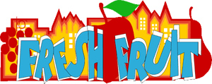

past performance | ||
|  |
Fresh Fruit Festival | |
|
All Out Arts announces the 10th Annual Fresh Fruit Festival to run July 14-29, 2012. The festival will take place at The Wild Project, Nuyorican Poets Cafe and the Leslie-Lohman Museum of Gay and Lesbian Art. This year the Fresh Fruit Festival will present 15 Plays, 3 new play readings, 3 music performances, 2 performances of Poetry and Spoken Word, a performance of Storytelling, an evening of Dance, an evening of Short Films, 2 Variety Shows and a gallery exhibition of Photography, Video and Poetry. “This festival encompasses the best of contemporary LGBT arts and culture,” said new Artistic Director Brian Maschka. “We're bringing back some of the best artists from our past and presenting loads of new talent performing everything from Spoken Word to Modern Dance.” Highlights from the festival include a music and multimedia series featuring musicians Jonathan Dalin, Robert German and Tokyo Penguin. Performance Artist David Kagan brings a bevy of fresh music and video from his recent visit to Ghana. Theatre billings include a New York premiere from Robert Patrick, a solo play about Emily Dickinson's letters exchanged with her sister-in-law, and Festival alumnus Bill Bowers in an investigation of silence in our culture. With license from the American Foundation for Equal Rights (AFER) and Broadway Impact, the festival will present a reading of “8”. “8” is a play chronicling the historic trial in the federal constitutional challenge to California’s Proposition 8, written by Academy Award-winning screenwriter and AFER Founding Board Member Dustin Lance Black. Marriage Equality USA will lead a panel discussion following the reading. In conjunction with the performances the Festival presents a visual art exhibition of photography, video and poetry at the Leslie-Lohman Museum of Gay and Lesbian Art. Curator Alexis Handwerker said “The exhibition, entitled Testimony, puts the focus on the faces of our youth who are our future.” The Festival Schedule can be downloaded here. For more information visit http://www.freshfruitfestival.com/2012.htm. Follow the Festival at facebook.com/freshfruitfest. The mission of All Out Arts is: to celebrate the continuing contributions of the Lesbian, Gay, Bisexual, Transgender Community to American culture and, indeed, to world cultures; to support LGBT art and artists; and to fight prejudice within our community and homophobia outside our community through the humanizing power of the arts. The Fresh Fruit Festival is an inclusive and international Lesbian, Gay, Bisexual and Transgender Arts & Culture Festival held in New York City. The festival presents work made by LGBT artists and specifically promotes original content and new works in theatre, dance, music, film, poetry and the visual arts. It presents contemporary and cutting edge work that provides our audience the unique perspectives of our artists, a forum for dialog about the arts and the ability to network across various communities. | ||
upcoming performances |
|||
 |
|||
| EVQ Film Festival 2018 August 20-25 |
|||
performance archives |
|||
| 2018 | 2017 | 2016 | 2015 |
| 2014 | 2013 | 2012 | 2011 |
| 2010 | 2009 | 2008 | 2007 |